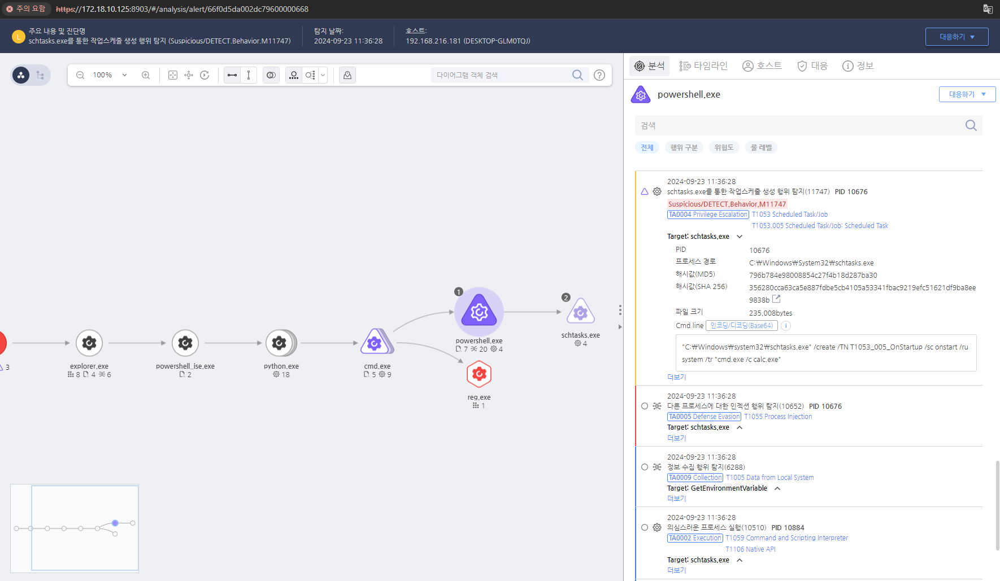

T1053.005.01 작업 스케쥴러로 프로그램 실행
D3FEND
MITRE ATT&CK 액션을 기준으로 대응 방안을 작성
Detection
schtasks.exe의 "/creat" 커맨드를 탐지한다.
Detection(EDR)

Response
schtasks.exe 또는 예약 작업과 관련된 로그(Event ID: 4698, 4702)를 모니터링하여 비정상적인 작업 생성을 탐지합니다.
Mitigations
작업 스케줄러 사용 제한 (M1026 - Privileged Account Management)
- 일반 사용자에게 작업 스케줄러 생성 및 관리 권한을 제한
schtasks.exe 및 at.exe 실행을 관리자 계정에서만 허용 - 그룹 정책(GPO)에서 예약 작업 생성 및 수정 권한을 특정 사용자로 제한
AppLocker 또는 WDAC 정책 적용 (M1038 - Execution Prevention)
schtasks.exe 및 at.exe의 실행을 차단하거나, 신뢰된 경로에서만 실행되도록 정책 적용 - WDAC(Windows Defender Application Control) 또는 AppLocker를 사용하여 비인가된 스크립트 및 실행 파일 실행 차단
- 작업 스케줄러를 이용한 의심스러운 실행 파일(.exe, .vbs, .bat, .ps1 등)의 실행 제한
로그 및 이벤트 모니터링 활성화 (M1047 - System Logging & Monitoring)
- Windows 이벤트 로그에서 Event ID 106 (작업 생성), 140 (작업 삭제), 141 (작업 업데이트) 모니터링
- Sysmon(Event ID 1, 5, 7, 8)을 활성화하여 schtasks.exe 및 at.exe의 실행을 기록
- 예약 작업 실행 후 비정상적인 네트워크 연결 또는 프로세스 생성 모니터링
EDR/XDR 솔루션을 활용한 작업 스케줄링 탐지 (M1040 - Behavior-Based Detection)
- EDR(Endpoint Detection & Response) 솔루션을 사용하여 비정상적인 Scheduled Task 생성 탐지
schtasks.exe나 at.exe의 비정상적인 실행 시도를 차단하고 경고 알림 설정 - 일반적인 작업 스케줄링 패턴과 다른 이상 행동 탐지 (예: 시스템 파일처럼 보이는 예약 작업 이름)
사용자 계정 및 권한 관리 강화 (M1018 - User Account Management)
- 관리자 계정과 일반 사용자 계정을 분리하고, 불필요한 관리자 권한 제거
- 로컬 관리자 계정을 제한하고, 원격에서 Scheduled Task를 설정할 수 없도록 제한
- 최소 권한 원칙(Least Privilege)을 적용하여 작업 스케줄러를 필요하지 않은 사용자에게서 제거
PowerShell 및 스크립트 실행 제한 (M1038 - Execution Prevention)
- PowerShell Constrained Language Mode 활성화하여 악성 스크립트 실행 제한
- AppLocker 또는 WDAC를 사용하여 스크립트 실행을 신뢰된 위치에서만 가능하도록 제한
- PowerShell ScriptBlock Logging을 활성화하여 작업 스케줄러를 통한 악성 스크립트 실행 추적
Affected Techniques
Action 실행시 함께 영향을 받는 다른 Techniqes
| D3FEND |
| D3-SJA Scheduled Job Analysis |
| D3-SICA System Init Config Analysis |
| D3-FIM File Integrity Monitoring |